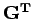
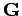
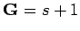

Inhalt Index DeskTop Bronstein

 Wahrscheinlichkeitsrechnung und Mathematische Statistik Mathematische Statistik Korrelation und Regression Mehrdimensionale Regression
Wahrscheinlichkeitsrechnung und Mathematische Statistik Mathematische Statistik Korrelation und Regression Mehrdimensionale Regression


ausgehen können. Im Falle s < N stellt (16.171) ein überbestimmtes lineares Gleichungssystem dar, zu dessen genäherter Lösung das HOUSEHOLDER-Verfahren verwendet werden kann. Der Übergang von (16.171) zu (16.166e), d.h. Multiplikation von (16.171) mit , wird auch als GAUSS-Transformation bezeichnet. Wenn die Spalten der Matrix  linear unabhängig sind, also Rang  ist, dann hat das Normalgleichungssystem (16.166e) eine eindeutige Lösung, die mit der nach HOUSEHOLDER ermittelten Näherungslösung von (16.171) übereinstimmt.